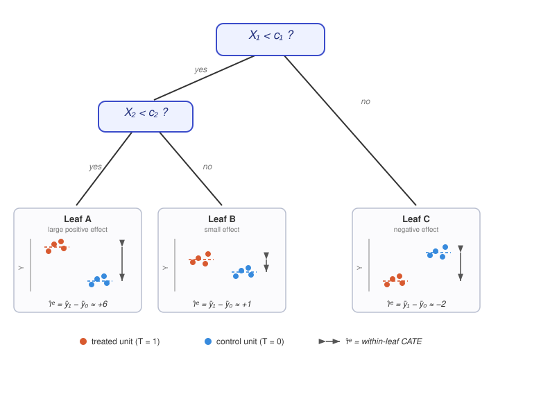
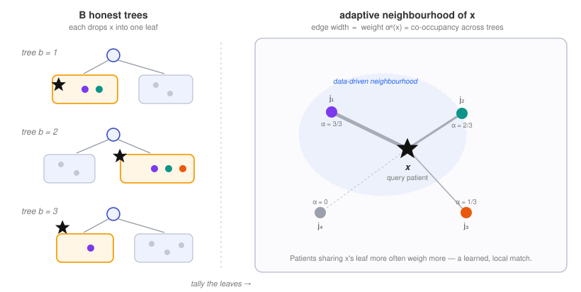

Heterogeneous Treatment Effects#
Estimating \(\tau(x) = \mathbb{E}[Y(1) - Y(0) \mid X = x]\).
The estimators in Direct Adjustment target a single number - the ATE or ATT averaged over the population. Heterogeneous treatment effect methods instead target the conditional average treatment effect (CATE) \(\tau(x) = \mathbb{E}[Y(1) - Y(0) \mid X = x]\), asking for whom the treatment works rather than whether it works on average. They share the same identification backbone (unconfoundedness and Overlap (Common Support)) but let the data, rather than a fixed functional form, discover which covariates drive effect heterogeneity. Two families are covered here: meta-learners, which decompose CATE estimation into standard regression sub-tasks, and causal trees and forests, which adaptively partition the covariate space. The tree ensembles underlying the latter - CART, bagging, and random forests - are covered in the standard machine-learning textbooks of Hastie, Tibshirani & Friedman (2009) and, at an introductory level, James et al. (2021); Athey & Imbens (2019) survey how these methods are adapted for causal estimation.
Meta-Learners for Heterogeneous Effects#
Meta-learners extend regression adjustment to the conditional average treatment effect (CATE) \(\tau(x) = \mathbb{E}[Y(1) - Y(0) \mid X = x]\) by decomposing the problem into standard regression sub-tasks solved by any base learner. Künzel et al. (2019) introduced and named the S-, T-, and X-learners, building on the transformed-outcome and high-dimensional heterogeneous-effect strategies catalogued by Powers et al. (2018). The R-learner of Nie & Wager (2021) is the direct CATE generalization of the DML residualization (Algorithm 9) - its residual-on-residual loss traces back to Robinson (1988) - and the DR-learner of Kennedy (2023) regresses the doubly robust AIPW score on covariates. The orthogonality and pseudo-outcome theory underpinning the R- and DR-learners is developed by Foster & Syrgkanis (2023) and Semenova & Chernozhukov (2021), while Curth & van der Schaar (2021) give a unifying analysis and empirical comparison of these meta-learning strategies. These estimators bridge directly to the Algorithm 12 and Algorithm 13 methods that follow.
Algorithm 10 (Meta-Learners (S-, T-, X-Learner))
Inputs Data \(D = \{X, T, Y\}\), base learner \(\mathcal{L}\)
Outputs Estimated CATE \(\hat{\tau}(x)\)
S-learner (single model): fit \(\hat{\mu}(t, x) = \mathcal{L}(Y \sim T, X)\); return \(\hat{\tau}(x) = \hat{\mu}(1, x) - \hat{\mu}(0, x)\)
T-learner (two models): fit \(\hat{\mu}_1(x)\) on treated and \(\hat{\mu}_0(x)\) on control; return \(\hat{\tau}(x) = \hat{\mu}_1(x) - \hat{\mu}_0(x)\)
X-learner (cross fitting on imputed effects):
Impute effects \(\tilde{D}^{(i)}_1 = Y^{(i)} - \hat{\mu}_0(x^{(i)})\) for treated, \(\tilde{D}^{(i)}_0 = \hat{\mu}_1(x^{(i)}) - Y^{(i)}\) for control
Regress \(\hat{\tau}_1(x) = \mathcal{L}(\tilde{D}_1 \sim X)\) and \(\hat{\tau}_0(x) = \mathcal{L}(\tilde{D}_0 \sim X)\)
Combine with propensity weight: \(\hat{\tau}(x) = \hat{\pi}(x)\,\hat{\tau}_0(x) + (1 - \hat{\pi}(x))\,\hat{\tau}_1(x)\)
Return CATE \(\hat{\tau}(x)\)
Algorithm 11 (R-Learner (and DR-Learner))
Inputs Data \(D = \{X, T, Y\}\), ML learners for nuisances and a CATE learner \(\mathcal{L}_\tau\)
Outputs Estimated CATE \(\hat{\tau}(x)\)
With cross-fitting, estimate nuisances \(\hat{\pi}(x) = \mathbb{E}[T \mid X]\) and \(\hat{\mu}(x) = \mathbb{E}[Y \mid X]\)
Form residuals \(\tilde{Y} = Y - \hat{\mu}(X)\) and \(\tilde{T} = T - \hat{\pi}(X)\) (as in Algorithm 9)
R-learner: minimize the weighted loss \(\hat{\tau} = \arg\min_{\tau} \sum_i \left(\tilde{Y}^{(i)} - \tau(x^{(i)})\,\tilde{T}^{(i)}\right)^2\)
DR-learner (alternative): regress the AIPW score \(\hat{\psi}^{(i)}\) from Algorithm 7 on covariates, \(\hat{\tau}(x) = \mathcal{L}_\tau(\hat{\psi} \sim X)\)
Return CATE \(\hat{\tau}(x)\)
Tree-based methods take a complementary route: rather than fitting a global functional form, they let the data partition the covariate space to discover where effects differ. Conceptually they sit at the intersection of the two earlier toolkits:
From propensity score methods. Algorithm 5 matches treated and control units on the scalar propensity score \(\hat{\pi}(x)\), while Algorithm 6 reweights them (both in Direct Adjustment). A causal forest generalises both ideas: instead of matching on a hand-picked distance, it learns an adaptive neighbourhood directly in covariate space - two patients are “close” when the trees repeatedly place them in the same leaf. The resulting forest weights \(\alpha^{(j)}(x)\) play the role of data-driven matching weights, and overlap remains the binding requirement (a leaf needs both treated and control members to yield a contrast).
From the meta-learners above. Like the doubly robust and orthogonal estimators (Algorithm 7, Algorithm 9), causal trees and forests residualise the outcome and the treatment against out-of-bag nuisance predictions \(\hat{Y}^{(-i)}\) and \(\hat{\pi}^{(-i)}(x)\). This makes them Neyman-orthogonal - first-order insensitive to errors in the nuisance estimates - and connects them directly to the R-learner of Algorithm 11 - a causal forest can be read as a locally-weighted, non-parametric R-learner.
The two algorithms below differ in granularity. A causal tree partitions the population into a handful of interpretable subgroups, assigning every member of a leaf the same effect estimate. A causal forest averages many such trees to deliver a smooth, individualised estimate \(\hat{\tau}(x)\) for each patient.
Causal Trees#
Our first approach to infer heterogeneous treatment effects is based on causal trees. In contrast to modelling the effect of the treatment on the potential outcome effect linearly, we rely on the idea of Athey & Imbens (2016). Algorithm 12 shows their procedure according to which a causal tree estimates heterogeneous treatment effects from covariates \(X\) and an observed outcome \(Y\).
Algorithm 12 (Causal Tree)
Inputs Covariates \(X\), treatment \(T \in \{0,1\}\), observed outcome \(Y\), cross-fitted nuisance estimates \(\hat{Y}^{(-i)}, \hat{\pi}^{(-i)}\)
Outputs Estimated CATE \(\hat{\tau}^{(\ell)}(x)\)
Pre-compute the cross-fitted nuisances \(\hat{Y}^{(-i)} = \hat{m}^{(-i)}(x^{(i)})\) and \(\hat{\pi}^{(-i)}(x^{(i)})\) by \(K\)-fold out-of-fold prediction (needed by the residualised split criterion; supplied out-of-bag by the ensemble in Algorithm 13)
Subsample data and split into construction and estimation sets (Honesty)
While partition of construction data is still possible: (Stopping criterion applies)
Create partition into two subpopulations maximizing heterogeneity
Map estimation data into determined tree leaves \(\mathcal{L}\)
For every leaf \(\ell \in \mathcal{L}\):
Estimate local CATE \(\hat{\tau}^{(\ell)}(x)\) using estimation data
Return CATE \(\hat{\tau}^{(\ell)}(x)\)
Similar to CART (Breiman et al., 1984), a causal tree partitions the sample into subgroups. It creates a partition of the patient population into subpopulations (i.e., leaves \(\ell\in\mathcal{L}\)) using recursive binary splitting. In contrast to a decision tree, a causal tree estimates the treatment effect \(\hat{\tau}\) directly by modelling the contrast in potential outcomes rather than modelling both potential outcomes and then taking their contrast.
Since a covariate that affects the expected outcome \(\mathbb{E}[Y \mid X = x]\) does not necessarily affect the treatment effect and vice versa, the splitting criterion is chosen with respect to covariates that actually cause treatment effect heterogeneity, as explained below.
For each split, the outcome-covariate pair is determined such that it maximizes the weighted difference \(n_L\cdot n_R\cdot (\hat{\tau}_L-\hat{\tau}_R)^2\) where \(n_L\) denotes the number of observations assigned to the left node and \(n_R\) the number of observations that are assigned to right node. The first two factors, \(n_L\) and \(n_R\), are a variance-decomposition weight: the product vanishes when either child is nearly empty (\(n_L\) or \(n_R \to 0\)) and grows as both children get larger, so it penalises degenerate splits that peel off a tiny leaf and favours splits into two well-populated leaves. The squared difference makes sure that the treatment effects between the two subpopulations are as heterogeneous as possible. The actual causal-tree objective of Athey & Imbens (2016) maximises an estimate of \(-\text{EMSE}_\tau\), the expected mean squared error: this heterogeneity reward minus a penalty for the within-leaf variance of each \(\hat{\tau}_\ell\), which grows when a leaf contains few treated or few control units, together with an honesty correction for estimating effects on a held-out sample. A constant, hence homogeneous, treatment effect is assumed across all observations within the respective subpopulation aggregated in a leaf. Within each leaf, units act as if randomised: the CATE is the difference in mean outcomes. We denote \(\mathbb{E}[Y^{(-i)} \mid X = x^{(i)}] = \hat{Y}^{(-i)}\):
Two points on this split-selection rule. First, the residualised form above - regressing the centred outcome on the centred treatment - is the R-learner / generalised-random-forest generalisation of Athey, Tibshirani & Wager (2019) and Nie & Wager (2021); the original causal tree of Athey & Imbens (2016) selects splits by a plain within-leaf difference in means and requires no residualisation. Second, the leave-one-out nuisances \(\hat{Y}^{(-i)}\) and \(\hat{\pi}^{(-i)}(x^{(i)})\) - where the \((-i)\) superscript denotes an estimate that excludes unit \(i\) - are not produced by a single tree: they must be pre-computed by cross-fitting (Step 1 above). Only in the forest (Algorithm 13) do they arise for free, as out-of-bag by-products of the \(B\)-tree ensemble (a unit is out-of-bag in every tree that did not subsample it).
The stopping criterion of further partitioning the population into subgroups is usually pre-specified by hyperparameters such as the minimum number of observations per leaf, a threshold for the weighted difference in the resulting treatment effects or a difference in sizes between the resulting nodes in terms of control and treatment group. If one of these minimum requirements is not met due to an additional split, the partitioning process is stopped and the algorithm intermediately returns the partition of \(\mathcal{L}\). Given this partition, the estimation step is executed to get CATEs that basically are differences in outcomes for treatment and control observations. In every leaf \(\ell\), there are both treated and untreated patients. Hence, the CATE is estimated as
{kind=link}

Fig. 13 Anatomy of a causal tree. Recursive binary splits on the covariates \(X\) carve the population into leaves, with each split chosen to maximise the heterogeneity \(n_L \cdot n_R \cdot (\hat{\tau}_L - \hat{\tau}_R)^2\) of the resulting effects - not to predict \(Y\). Within a leaf the units behave as if randomised, so the CATE is simply the difference in mean outcomes between its treated and control members (an exact, equal-weight match inside the leaf). The leaves estimate visibly different effects (\(\hat{\tau}^{(\ell)} \approx +6, +1, -2\)), which is exactly the heterogeneity the splits are designed to expose.#
The underlying assumptions are that in each leaf, the treatment effect is the same across all observations in the leaf and the leaves are small enough that the \((Y, T)\) pairs of each observation in a leaf behave as if they have come from an RCT: this requires that \(T\) is randomly distributed across the observations in the leaf given the covariates and the potential outcomes \(Y(0)\) and \(Y(1)\) are each independent of the assigned treatment \(T\) within the leaf (conditional ignorability \(Y(t) \perp T \mid X\); Rosenbaum & Rubin, 1983).
To ensure unbiased estimates of CATEs, the principle of honesty is introduced for causal trees and causal forests (Athey & Imbens, 2016). A method is called honest if the entire sample of patients is split into two parts, one for tree construction and one to estimate the treatment effects within the leaves. Hence, model selection is decoupled from model estimation. This addresses the post-selection inference problem and ensures unbiased estimates of CATEs.
The robustness of the method comes not from inverse-propensity weighting but from the way the outcome and treatment are residualised. In the split-selection regressions above, the propensity enters only as a centering term, through \(\big(T^{(i)} - \hat{\pi}^{(-i)}(x^{(i)})\big)\) - Robinson-style local centering, i.e., the R-learner moment condition - and not as an inverse-propensity weight \(1/\hat{\pi}\); the leaf estimator above is a plain difference in mean outcomes that uses no propensity at all.
The two nuisance functions are the outcome regression and the propensity,
estimated out-of-bag by \(\hat{Y}^{(-i)} = \hat{m}^{(-i)}(x^{(i)})\) and \(\hat{\pi}^{(-i)}(x^{(i)})\). Their errors are simply the deviations of the estimates from these truths,
Centering both the outcome and the treatment on their out-of-bag predictions makes the effect estimate Neyman-orthogonal: the two errors enter the estimate only through their product, never on their own. The leading bias is second order,
where \(\lVert \cdot \rVert_2\) is the \(L_2(P)\) norm. A first-order error in either nuisance alone is therefore annihilated, and if each converges even slowly - e.g. \(\lVert \Delta_m \rVert_2, \lVert \Delta_\pi \rVert_2 = o_p(n^{-1/4})\) - their product is \(o_p(n^{-1/2})\), so the CATE estimator stays \(\sqrt{n}\)-consistent and asymptotically normal (Robinson, 1988; Nie & Wager, 2021). This orthogonality is what makes the procedure reliable with observational data, where the treatment is not assigned randomly. It is related to - but weaker than - the double robustness of AIPW / DR-learner estimators (Robins, Rotnitzky & Zhao, 1994; Kennedy, 2023), whose consistency survives if either the outcome or the propensity model is correct - a guarantee that residual-on-residual centering does not by itself provide.
With a causal tree, we estimate heterogeneous treatment effects, differentiating by subgroups. We additionally introduce causal forests that ensure a stronger degree of personalization in treatment effect estimation using adaptive nearest neighborhood estimation.
Causal Forests#
We additionally introduce causal forests that ensure a stronger degree of personalization in treatment effect estimation using adaptive nearest neighbourhood estimation. Similarly as for random forests (Breiman, 2001), the CATEs in this specific ensemble method of causal forests are estimated by a combination of the estimations of the weak learners, i.e. causal trees that are estimated \(B\) times. In addition, principles such as random split selection and recursive binary splitting are the same here as for random forests (Athey, Tibshirani & Wager, 2019). However, the CATE is not calculated as a simple average over \(B\) causal trees; instead, the trees define an adaptive local neighbourhood over which a proximity-weighted regression (R-learner) moment condition is solved.
Algorithm 13 (Causal Forest)
Inputs Covariates \(X\), treatment \(T \in \{0,1\}\), observed outcome \(Y\)
Outputs Estimated CATE \(\hat{\tau}(x)\)
For every tree \(b = 1, \ldots, B\):
Split data into construction and estimation sets (for honesty)
While partition of construction data is possible: (maximize heterogeneity)
Create partition into two subpopulations
Map estimation data into determined tree leaves \(\mathcal{L}\) (leaves fixed from construction data)
For every leaf \(\ell \in \mathcal{L}\):
Estimate the CATE \(\hat{\tau}^{(\ell,b)}(x)\) on estimation data
Return CATE \(\hat{\tau}^{(\ell,b)}(x)\)
Calculate weights \(\alpha^{(i)}(x)\) (forest proximity weights)
Calculate final CATE \(\hat{\tau}(x)\) (weighted local regression / R-learner moment)
Return CATE \(\hat{\tau}(x)\)
Fitting \(B\) causal trees, we repeat the separation step into a construction data set and an estimation data set repeatedly for every causal tree. Hence, every single weak learner is fitted on different subsamples of the observational data set. This ensures honesty in the ensemble setting as well, when the individual causal trees are composed to a causal forest. Every causal tree again recursively builds a partition into binary splits of the entire patient population based on the construction set. Then, it estimates the CATEs in the leaves \(\ell^{(b)}\) based on the estimation set. After \(B\) causal trees have been built, the forest proximity weights that define each observation’s local neighbourhood are calculated for every observation as
The weights indicate how often another patient \(j\not = i\) with covariates \(X^{(j)}\) falls in the same leaf as the patient of interest \(i\) with covariates \(x\) across the trees in the forest. The more often the patients are in the same leaf, the closer they are to each other and the higher is the weight of patient when estimating the treatment effect of the observation with given covariates and outcome.
The causal forest is hence not used to construct the final estimate of CATE as an average over all single estimations but rather for adaptive neighbourhood matching of each individual observation. The actual CATE is then obtained locally as the solution of a proximity-weighted R-learner moment condition over its nearest neighbours, i.e., similar patients (Athey, Tibshirani & Wager, 2019); (Nie & Wager, 2021), as
{kind=link}

Fig. 14 How a causal forest builds an adaptive neighbourhood. Across the \(B\) honest trees (left), the query patient \(x\) repeatedly lands in a leaf alongside different sets of patients. Tallying how often each patient \(j\) shares \(x\)’s leaf yields the forest weight \(\alpha^{(j)}(x)\) (right): patient \(j_1\), a leaf-mate in every tree, weighs most, whereas \(j_4\) - never co-located - contributes nothing. The result is a learned local match in covariate space rather than a match on a single propensity score, with out-of-bag residuals making the final weighted estimate Neyman-orthogonal - first-order insensitive to errors in the nuisance estimates.#
To construct the neighbourhood for each single patient \(i\), weights are calculated for every other patient \(j\not = i\). Note that each observation \(j\) is centred by its own nuisance values: the query point \(x\) enters only through the forest weights \(\alpha^{(j)}(x)\), while the residuals \(\hat{Y}^{(-j)}\) and \(\hat{\pi}^{(-j)}(x^{(j)})\) are evaluated at patient \(j\)’s own covariates \(x^{(j)}\) and calculated out-of-bag, meaning that information about patient \(j\) was not used for their estimation. We refer to Wager & Athey (2018) for more details on the estimation procedure. To assign an observation to a leaf \(\ell^{(b)}\) in iteration \(b\), the set of covariates can vary across patients to determine the path, as causal forests share the property with random forests to randomly select the set of possible covariates at each split (Breiman, 2001). Amongst this set, the splitting covariate that maximizes heterogeneity in treatment effects amongst the subgroups, is chosen on a data-driven basis. This allows the path to vary per leaf \(\ell\) and per iteration \(b\).